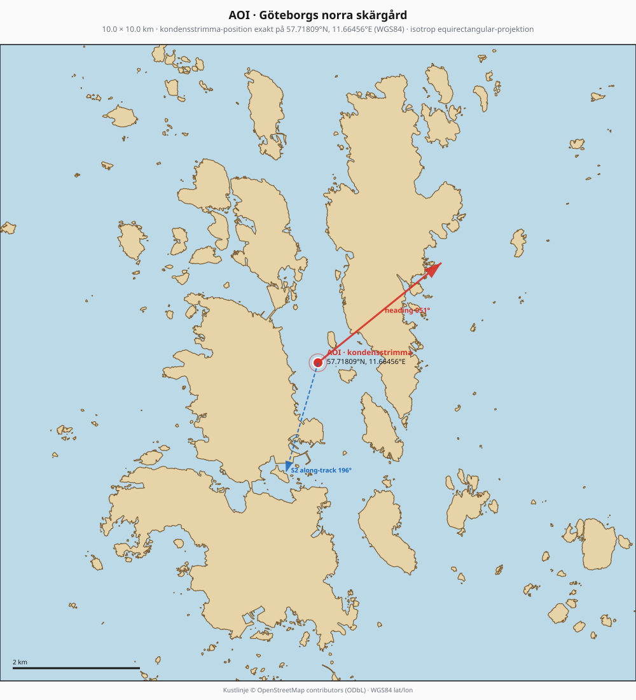
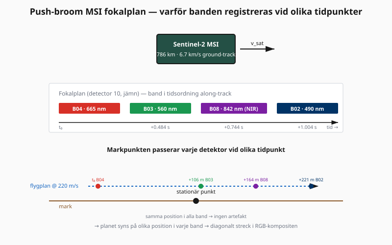
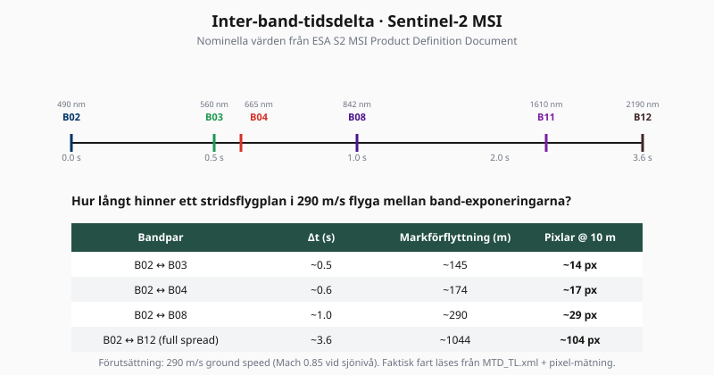
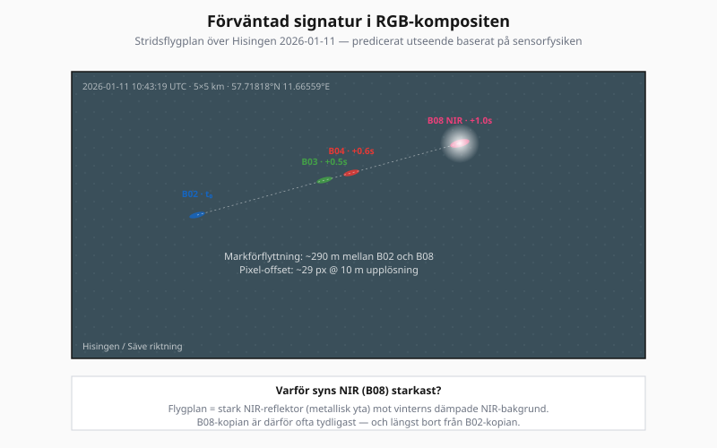

Sensorfysik: hur Sentinel-2 avbildar ett snabbt rörligt objekt · Hisingen, 2026-01-11 10:43:19 UTC




Sentinel-2 MSI använder en push-broom-design: i fokalplanet finns separata detektorrader för varje spektralband. Banden ligger åtskilda along-track (i satellitens rörelseriktning), så när satelliten sveper över ett område registrerar varje band-detektor samma punkt på marken vid något olika tidpunkter.
Med en orbit-hastighet motsvarande ~6.7 km/s ground-track-rörelse innebär bandens fysiska avstånd på fokalplanet en tidsdelta på 0.5–3.6 sekunder mellan första (B02, blå) och sista bandet (B12, SWIR). De fyra synliga + NIR-banden (B02, B03, B04, B08) som används i RGB-analyser har en spread på ~1.0 sekund.
En stationär markpunkt — ett hus, en väg, en vattenyta — befinner sig på samma plats vid t₀, t₀+0.5s och t₀+1.0s. Alla band registrerar samma pixel. Co-registreringen i L2A-produkten kompenserar för geometriskillnaden så att alla band hamnar på samma rutnät, och slutanvändaren ser en sömlös bild.
Ett flygplan, ett fartyg eller en bil rör sig under exponeringsintervallet. Mellan B02 och B08 har planet förflyttat sig en distans v · Δt = (290 m/s)(1.0 s) = 290 m. Eftersom Sentinel-2:s pixelstorlek är 10 m motsvarar det 29 pixlar — fullt synligt i kompositbilden.
Givet ett stridsflygplan med markhastighet 290 m/s (typvärde för JAS 39 Gripen i normal cruise):
| Bandpar | Δt (s) | Förflyttning (m) | Pixlar @ 10 m | Färg i RGB |
|---|---|---|---|---|
| B02 ↔ B03 | ~0.5 | ~145 | ~14 px | Blå ↔ Grön |
| B02 ↔ B04 | ~0.6 | ~174 | ~17 px | Blå ↔ Röd |
| B02 ↔ B08 | ~1.0 | ~290 | ~29 px | Blå ↔ NIR (osynlig i RGB) |
| B02 ↔ B12 (full spread) | ~3.6 | ~1044 | ~104 px | — |
I praktiken syns det som tre separerade färgade ellipser (blå, grön, röd) i den synliga RGB-kompositen, plus en osynlig fjärde kopia ~29 px bort i NIR-bandet. Eftersom flygplan är starka NIR-reflektorer mot vinterns dämpade NIR-bakgrund är B08-kopian ofta den tydligaste signalen för identifikation.
Eftersom relationen är v = offset_meter / Δt kan flygplanets markhastighet uppskattas direkt från bilden:
MTD_TL.xml.v_ground = offset_m / Δt.Med Δt-precision på 0.01 s och pixel-precision på 1 px ger metoden hastighetsosäkerhet på ~10–20 m/s — fullt tillräckligt för att skilja propellerflyg (50–100 m/s), trafikflyg (200–250 m/s) och stridsflyg (200–600 m/s) från varandra.
Den här analysen kräver Sentinel-2 L1C SAFE-arkivet (per-band JP2-filer i native detektor-geometri):
Repots befintliga fetch_des_data (L2A via DES openEO) bör inte användas här. Pipeline-anropet är istället fetch_l1c_safe_from_gcp(date, coords, dest_dir) — vilket också är vad demos/lilla_karlso_birds använder för C2RCC-pipelinen (samma SAFE-format, samma fetch-funktion).
Push-broom-parallax används rutinmässigt i öppen källanalys:
Att ImintEngine kan reproducera analysen visar att verktyget hanterar både civila användningsfall (vegetation, vatten, kustförändring) och säkerhets-/övervakningsrelevanta frågor som faller under samma sensorfysik.
Källor: ESA Sentinel-2 MSI Product Definition Document (focal plane geometry, kapitel 3); Heiselberg, H. (2019), "A Direct and Fast Methodology for Ship Recognition in Sentinel-2 Multispectral Imagery"; Cermak & Knutti (2009). Repo-konvention: TAB_CONFIG-mönster i docs/js/tab-data.js.